introduction
CSY-1018 introduces students to the world of CSS and HTML where they learn about various properties and attributes about HTML and CSS. this course allows students to create amazing webpages with the help of those codes and improve their skills. also students can excess different tools to further enhance their webpages design like Google Material Design
there were six web pages needed to be coded in this assignment. they are
- home page: the landing page
- about me: introduction to myself
- social: social media links where i am available
- cv: my resume
- contact: map to find me
- model_gp: report page
Home page
this is the landing page. on the top of the page navigation bar can be found. a photo with my introduction is present at the middle and a footer with a copyright at the bootom of the page.
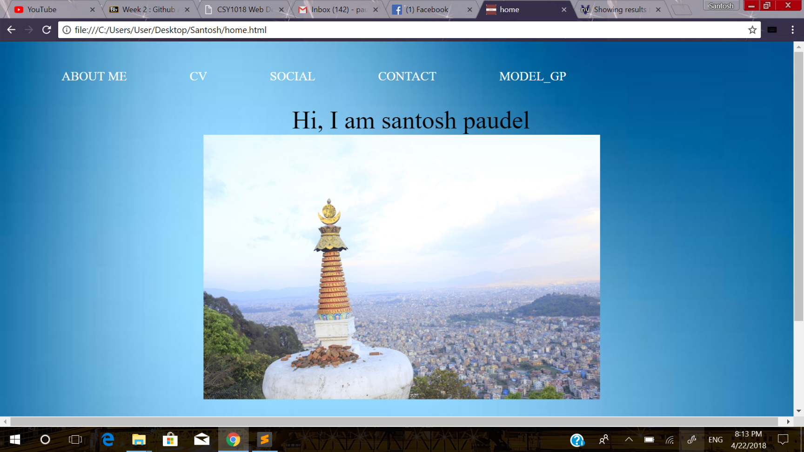 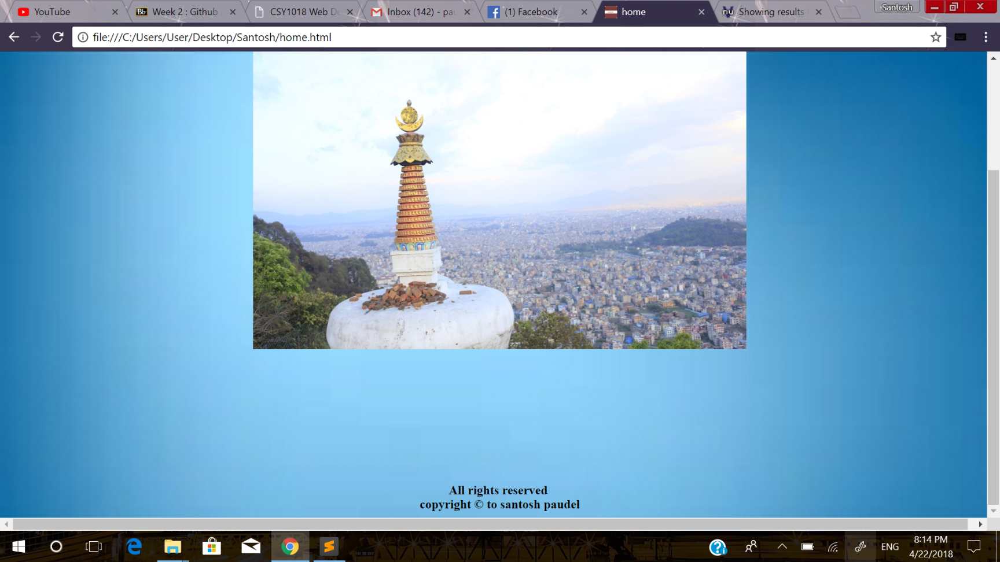accessibility of wave
evidence of w3school html validation
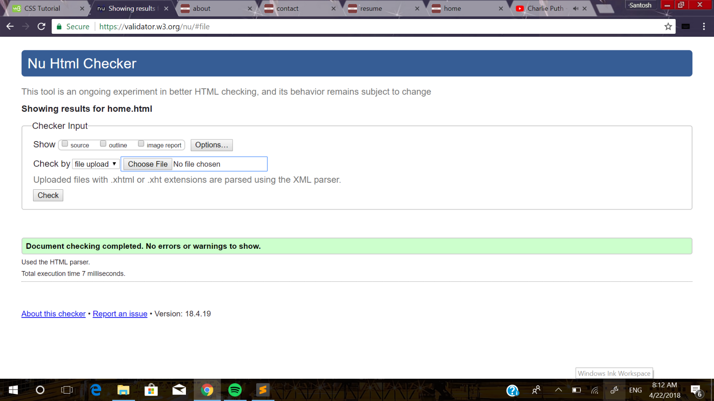about me page
this page contains a small piece information about me with an image of mine and nav bar and footer at their place just like the home page
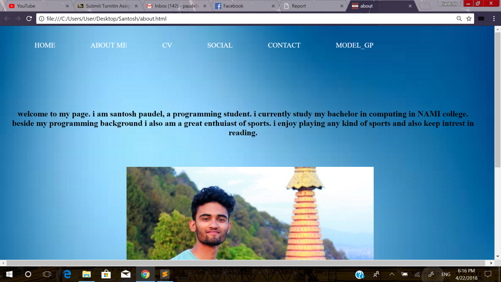 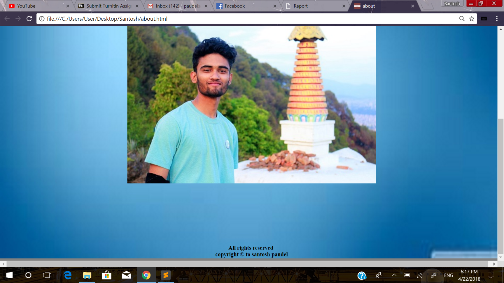evidence of w3school html validation
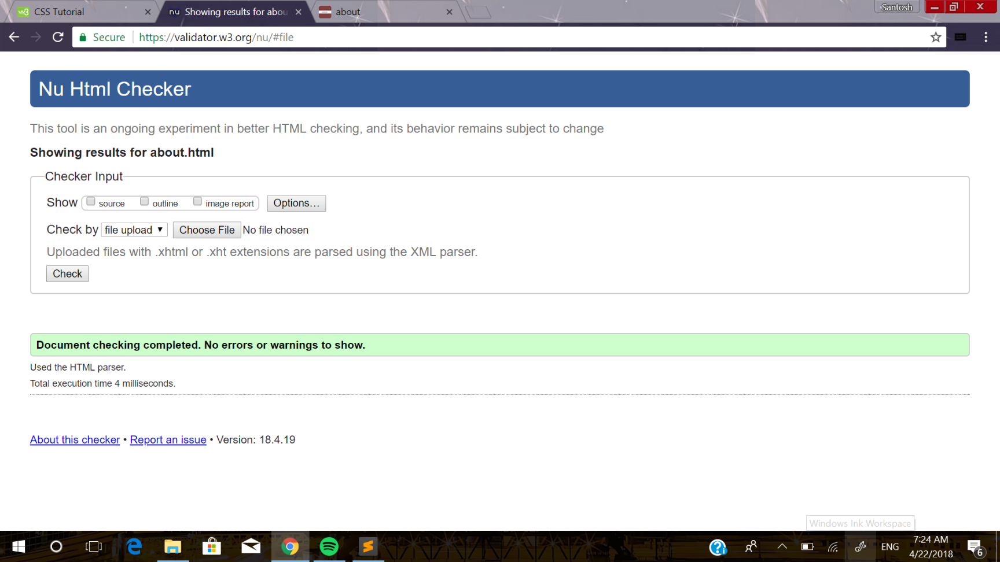cv page
this page also have nav bar and footer at its usual page with a resume containing detailed information of me
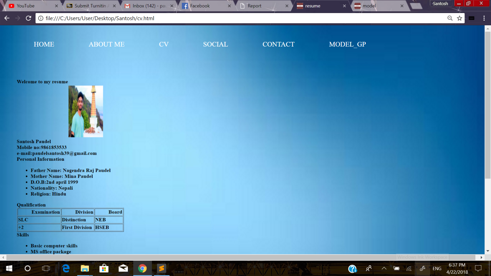 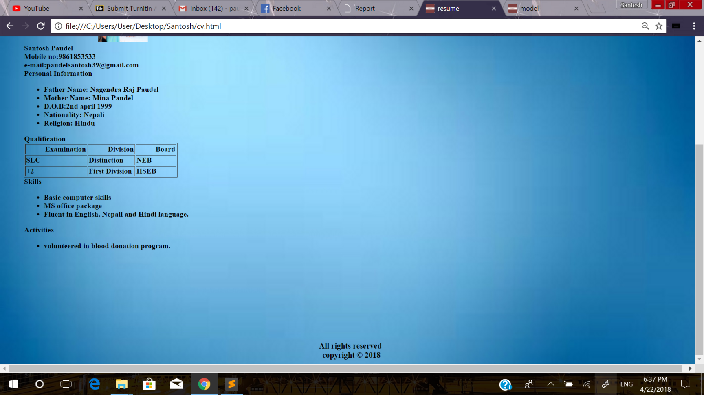evidence of w3school html validation
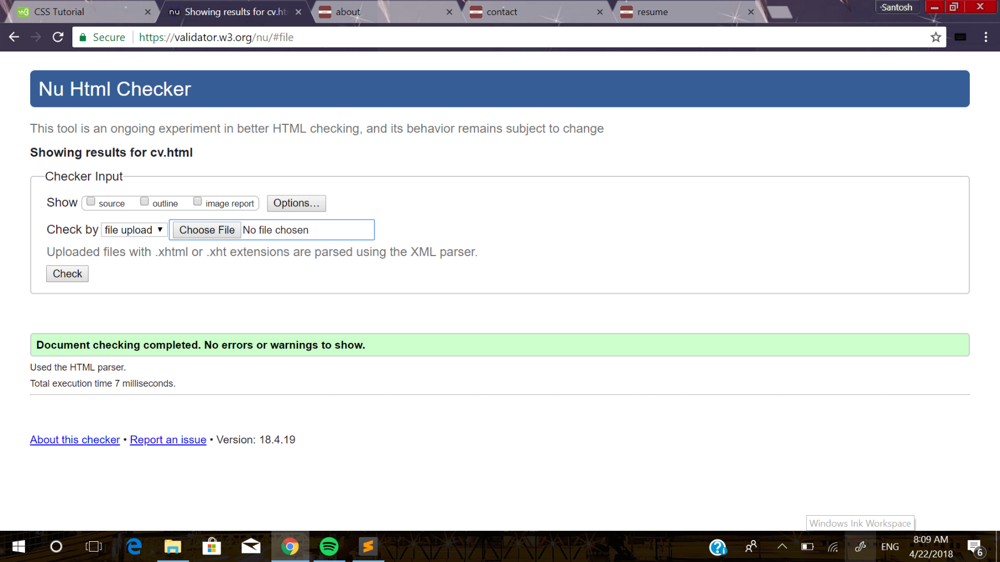social page
this page contains social media link to contact me through them. it also have same properties as of home page for the nav bar and footer.
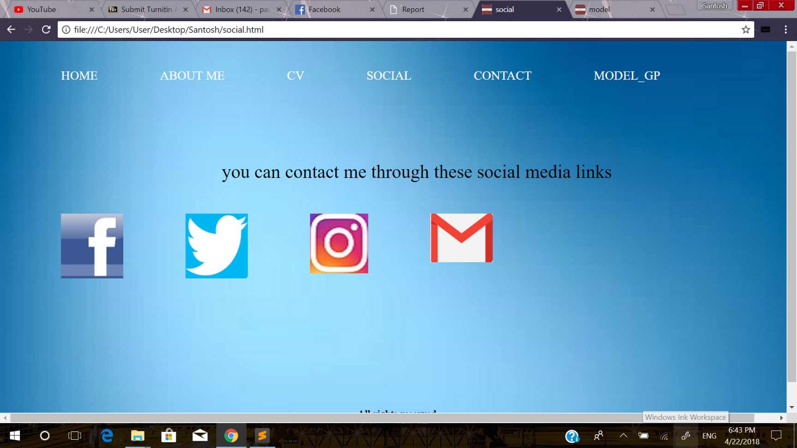 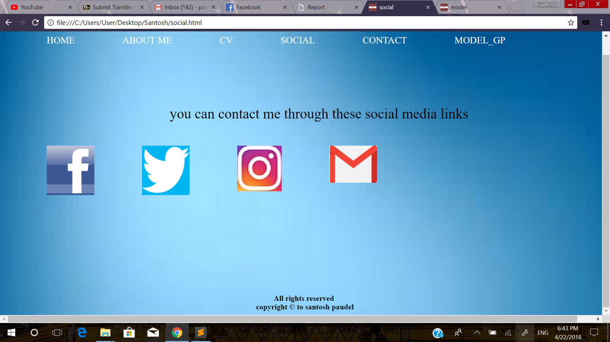evidence of w3school html validation
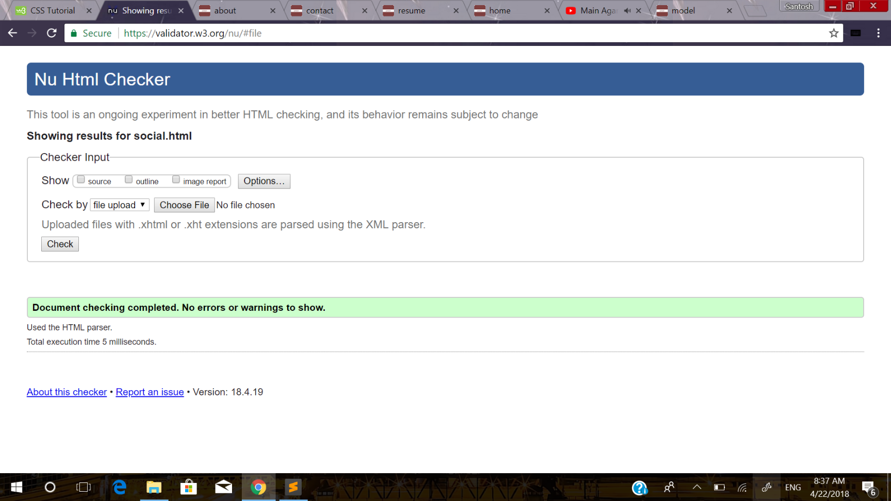contact page
contact page contains a map of my resendential place and a form for submitting your queries
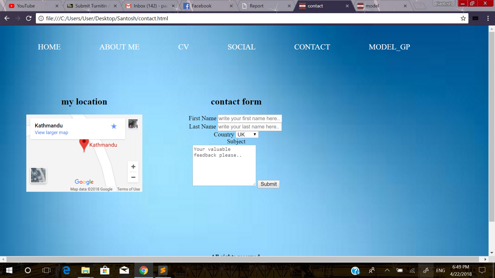 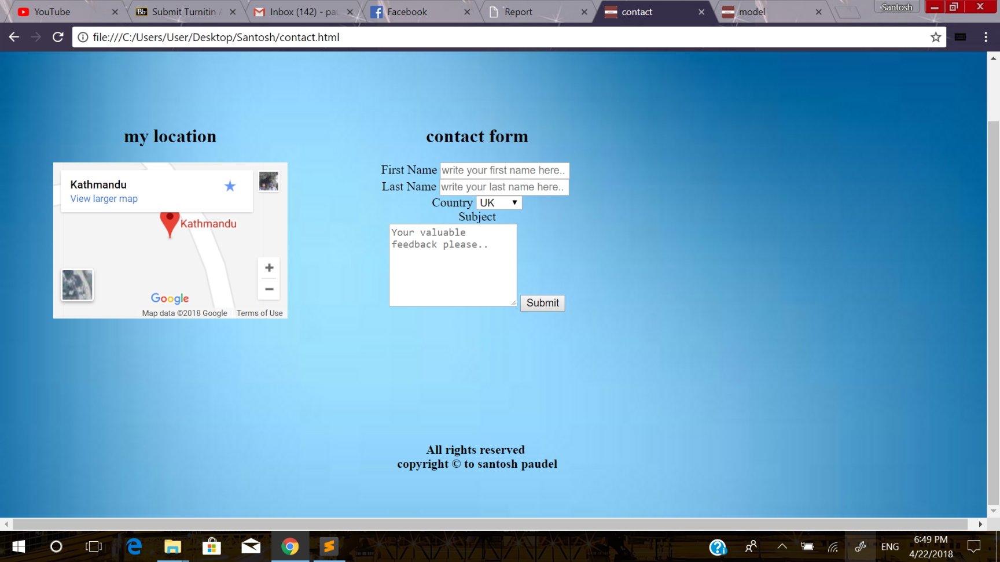